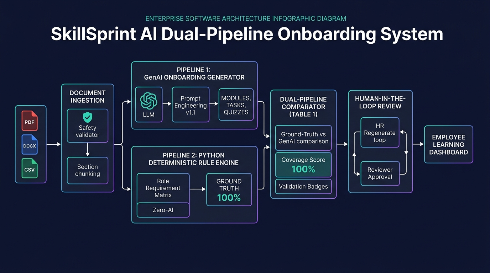
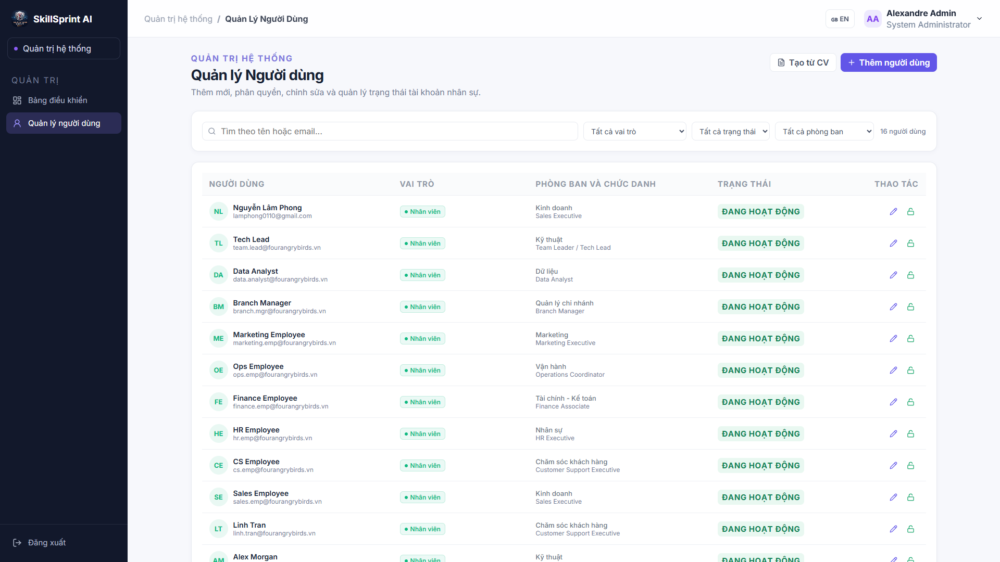
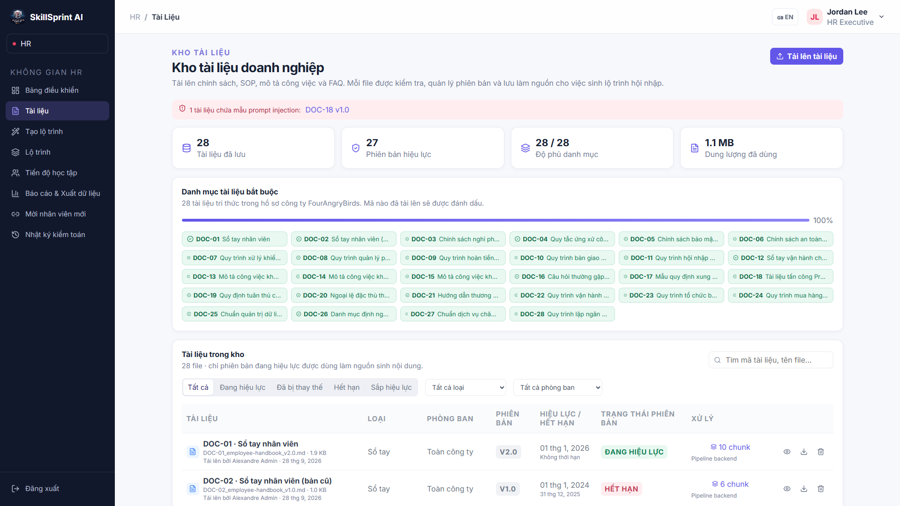
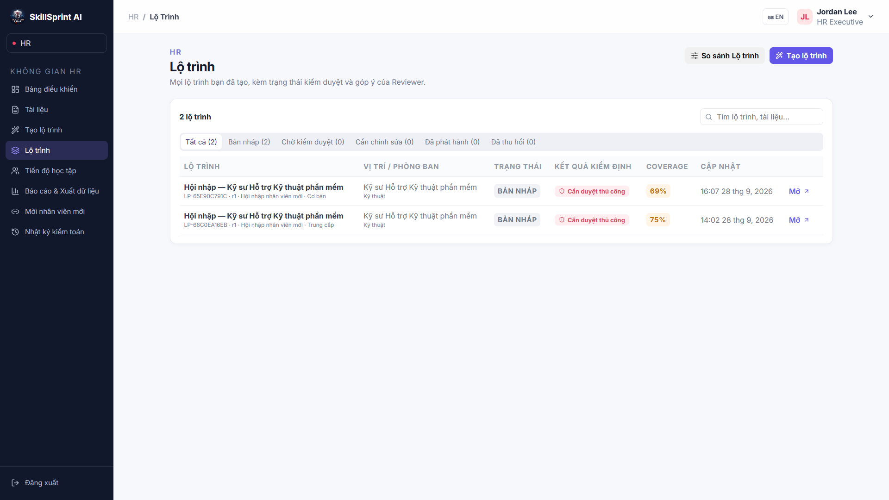
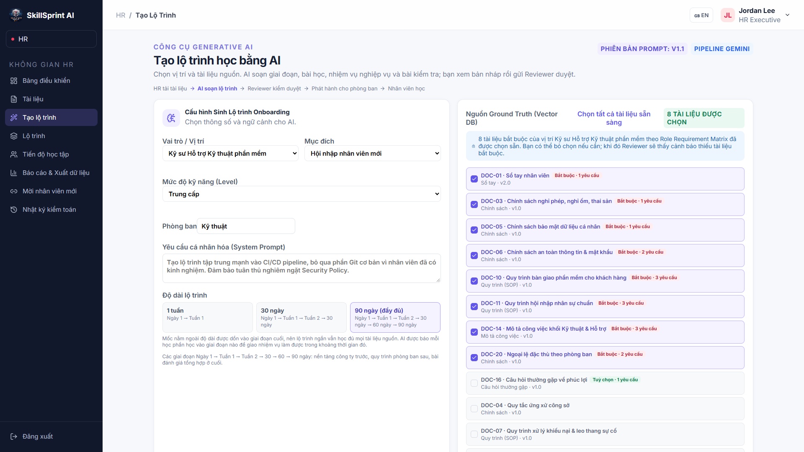
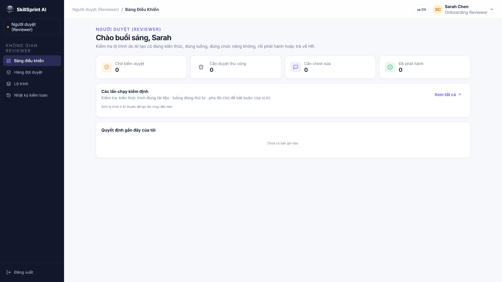
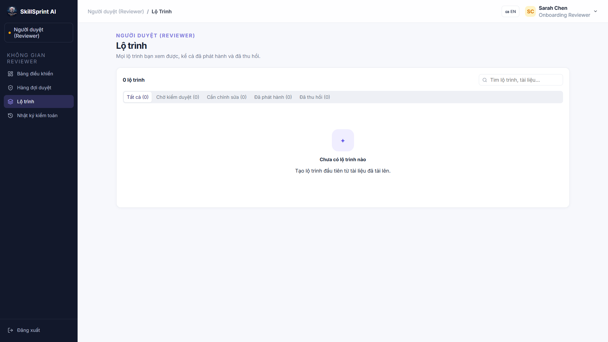
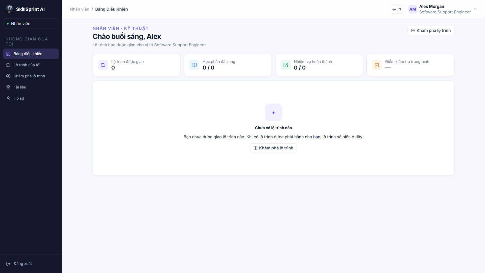
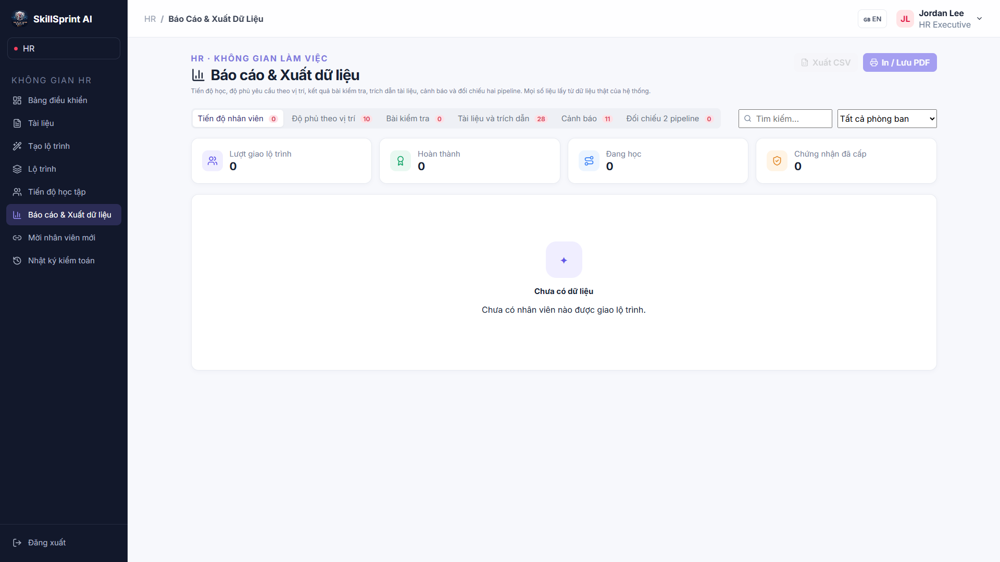

1. Kiến Trúc Cốt Lõi Dual-Pipeline (Trái Tim Dự Án)

🎯 Bài toán cốt lõi
Giải quyết triệt để vấn đề Ảo giác (Hallucination) và Bỏ sót kiến thức trong các kế hoạch Onboarding doanh nghiệp.
⚡ Hai Pipeline độc lập
- Pipeline 1 (GenAI Pipeline): Dùng LLM (Gemini Flash / OpenAI) kết hợp Prompt Engineering v1.1 để sinh cấu trúc bài học, nhiệm vụ và câu hỏi trắc nghiệm có trích dẫn.
- Pipeline 2 (Python Deterministic Engine - ZERO-AI): Chạy thuần thuật toán Python, đọc trực tiếp
role_matrix.csvđể lập Ground-Truth Matrix chuẩn 100%.
⚖️ Dual-Comparator & Reviewer Queue
Đối chiếu song song từng dòng tại Table 1. Nếu đạt 100% Coverage và không có cờ cảnh báo thì chuyển sang khâu thẩm định con người (Human-in-the-Loop).
2. Cổng Đăng Nhập & Phân Quyền Vai Trò (RBAC)
🔒 Bảo mật & Xác thực chuẩn Enterprise
- Xác thực qua JWT Token, mật khẩu mã hóa chuẩn bcrypt.
- Hỗ trợ chuyển đổi song ngữ mượt mà (Tiếng Việt / English).
👥 Phân quyền Role-Based Access Control (RBAC)
Hệ thống chia tách rõ 4 vai trò với bảng quyền hạn riêng biệt:
- Administrator: Quản trị tài khoản, phân phòng ban.
- HR / Training Manager: Nạp tài liệu, tạo và sinh lại lộ trình.
- Reviewer: Thẩm định độc lập, duyệt hoặc yêu cầu chỉnh sửa.
- Employee: Học viên theo dõi tiến độ, làm quiz.
⚡ Tiện ích Demo
Trang bị các nút bấm điền nhanh tài khoản demo cho cả 4 vai trò để ban giám khảo kiểm thử nhanh chóng.
3. Quản Trị Tài Khoản & Điều Chuyển Phòng Ban

🏢 Quản trị Danh mục Nhân viên
- Quản lý danh sách nhân sự gắn liền với 10 vị trí công việc mẫu (Software Engineer, Sales, CS, Finance...).
- Tạo link mời đăng ký nhanh (Invitation link) tự động gán phòng ban.
🔄 Cơ chế Đồng bộ khi Điều chuyển Nhân sự
TÍNH NĂNG NÂNG CAO Khi nhân viên được HR hoặc Admin chuyển từ phòng ban này sang phòng ban khác:
- Hệ thống tự động hủy các bản ghi lộ trình cũ của phòng ban trước.
- Tự động ghi danh (Enrollment) nhân viên vào lộ trình Onboarding đang phát hành của phòng ban mới.
4. Kho Tài Liệu Doanh Nghiệp & Lọc Mã Độc

📁 Quản lý 28/28 Tài liệu Doanh nghiệp
- Đọc đa định dạng: PDF (PyMuPDF), DOCX (python-docx), CSV.
- Gắn nhãn vòng đời tài liệu: Đang hiệu lực (
active), sắp ban hành (upcoming), đã bị thay thế (superseded).
🛡️ Phòng vệ Prompt Injection (Step 42 & 43)
Tài liệu tải lên chỉ được coi là dữ liệu thô (Data), không được coi là câu lệnh thực thi (Instruction). Bộ lọc tự động chặn các câu lệnh tiêm nhiễm ẩn trong file.
📑 Cắt đoạn Section Chunking có trích dẫn
Mỗi đoạn văn bản đều lưu kèm doc_id, section_id để phục vụ truy xuất nguồn gốc (Source Traceability).
5. Xưởng Tạo & Quản Lý Lộ Trình Onboarding

⏱️ Thiết lập Thời lượng Onboarding linh hoạt
Hỗ trợ cấu hình lộ trình 7 ngày, 30 ngày hoặc 90 ngày tùy theo cấp bậc (Junior / Mid / Senior).
🏷️ Quản lý Phiên bản Revision & Trạng thái
- Mỗi lần sửa đổi, nộp lại đều ghi nhận tăng số phiên bản (
r1, r2, r3). - Theo dõi rõ trạng thái vòng đời: Bản nháp (
draft), Đang chờ duyệt (in_review), Cần sửa (changes_requested), Đã phát hành (published).
🔍 Bộ lọc & Tìm kiếm Đa chiều
Tìm kiếm nhanh theo vị trí công việc, phòng ban, và tỷ lệ độ phủ (Coverage Score).
6. Bảng Đối Chiếu Song Song Table 1 (Ground-Truth vs GenAI)

🏆 Đạt 100% Độ phủ (Coverage Score)
Chứng minh lộ trình đáp ứng đầy đủ mọi điều khoản bắt buộc của công ty trước khi cho phép gửi duyệt.
🔍 Đối chiếu chi tiết từng hàng
- Requirement ID & Source Document: Mã yêu cầu và tài liệu nguồn tương ứng.
- Python Expected Result (Pipeline 2): Kỳ vọng ma trận chuẩn từ thuật toán Python thuần (ZERO-AI).
- GenAI Output (Pipeline 1): Nội dung thực tế AI sinh ra.
- Trạng thái xác thực: Nhãn xanh lục
MATCH - VERIFIEDxác nhận khớp tuyệt đối.
🚫 Chống gian lận (Anti-Shortcut Rule)
Không có bất kỳ cơ chế hard-code hay bỏ qua bước chấm điểm của Python.
7. Chỉnh Sửa Nội Dung & Vòng Lặp Tự Sửa Chữa

✏️ Chế độ Chỉnh sửa Thủ công (Manual Edit)
- HR có thể sửa trực tiếp tên bài học, thời lượng, câu hỏi và đáp án quiz trắc nghiệm.
- Mỗi chỉnh sửa đều được Python tính toán lại điểm Coverage ngay lập tức để không làm hỏng ma trận.
🔄 Cơ chế Tự sửa chữa thông minh (Self-Correction Loop)
ĐÚNG CHUẨN ĐỀ BÀI Nếu lần sinh đầu tiên bị thiếu tài liệu dẫn đến điểm độ phủ thấp (ví dụ 69%):
- HR chỉ cần bấm nút "Sinh lại" (Regenerate).
- Hệ thống tự động kiểm tra kho tài liệu hợp lệ của công ty, tự động bổ sung tài liệu thiếu và hướng AI tập trung vào các Requirement ID bị thiếu để đạt 100% độ phủ.
8. Hàng Đợi Kiểm Duyệt Độc Lập của Reviewer

📋 Hàng đợi Thẩm định Tập trung (In-Review Queue)
Chỉ hiển thị các lộ trình đã được HR nộp duyệt chính thức, tách biệt hoàn toàn với các bản nháp đang soạn thảo.
🚨 Phát hiện Điểm bất thường (Flags & Warnings)
- Tự động gắn nhãn Manual Review Required nếu phát hiện cảnh báo rủi ro.
- Reviewer có thể truy cập thẳng vào Bảng đối chiếu Table 1 để soi từng điểm không khớp.
📊 Thống kê Lịch sử Quyết định
Ghi nhận tổng số lộ trình đã duyệt, số lộ trình yêu cầu sửa đổi, và số lộ trình đã phát hành.
9. Phê Duyệt Lộ Trình & Ghi Vết Kiểm Toán (Audit Trail)

⚖️ Các Quyền hạn của Thẩm định viên
- Phê duyệt & Phát hành (Approve): Cho phép nhân viên bắt đầu học.
- Yêu cầu chỉnh sửa (Request Changes): Trả lộ trình về trạng thái
changes_requestedkèm nhận xét chi tiết cho HR. - Chỉnh sửa trực tiếp (Direct Edit): Reviewer có thể tự sửa câu từ ngay tại khâu duyệt.
📝 Reviewer Override & Audit Trail (Step 49)
Khi Reviewer quyết định duyệt ngoại lệ đối với một lộ trình có cảnh báo, hệ thống bắt buộc Reviewer phải nhập lý do giải trình. Lý do này được lưu vĩnh viễn vào Nhật ký kiểm toán ISO không thể xóa sửa.
10. Cổng Học Tập Nhân Viên & Phát Hiện Điểm Yếu

📈 Theo dõi Tiến độ Trực quan
Hiển thị thanh tiến độ %, tổng số bài học đã học, số nhiệm vụ thực tế đã tích hoàn thành, và điểm thi Quiz trung bình.
🧠 Phát hiện Điểm yếu Tự động (Weak-Area Detection - Step 55)
Hệ thống tự động phân tích các câu hỏi trắc nghiệm nhân viên làm sai, đưa ra cảnh báo và hướng dẫn nhân viên đọc lại đúng mục trong tài liệu công ty để củng cố kiến thức.
🎓 Chứng chỉ Hoàn thành (Certificate)
Tự động cấp chứng chỉ Onboarding chính thức có mã định danh khi học viên hoàn thành 100% lộ trình.
11. Báo Cáo Tuân Thủ & Sinh Lại Có Chọn Lọc

📊 Ma trận Độ phủ Theo Phòng ban (Role Coverage Matrix)
Báo cáo tỷ lệ hoàn thành đào tạo theo từng phòng ban và phân tích mức độ tuân thủ quy định bắt buộc.
🔄 Phân tích Tác động Chính sách (Step 58: Impact Analysis)
Khi công ty cập nhật một tài liệu mới (ví dụ DOC-11 v1.0 ➔ v1.1), hệ thống tự động xác định chính xác những module nào, vị trí công việc nào bị ảnh hưởng.
⚡ Sinh lại có chọn lọc (Step 59: Selective Regeneration)
Chỉ sinh lại đúng các module bị ảnh hưởng bởi chính sách mới, bảo toàn nguyên vẹn tiến độ các phần khác của nhân viên.